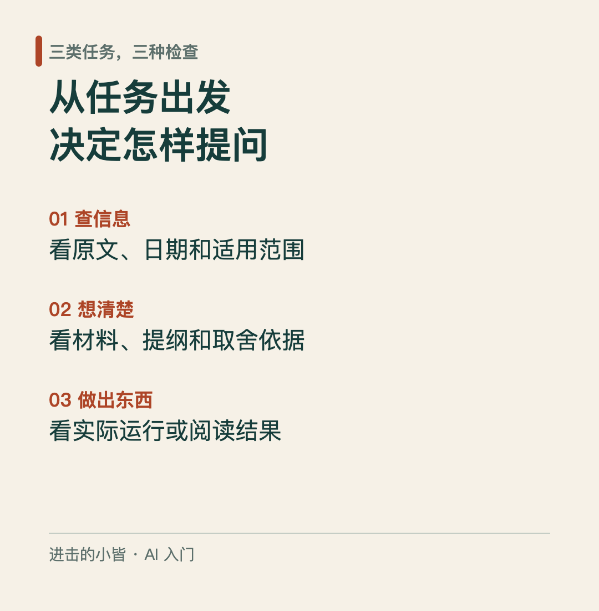

AI 除了聊天，还能帮你做什么？
打开 AI 对话框，输入「帮我写一份周报」，等它给出一篇文章。读完却发现，话说得很完整，事情不是自己做的。
这是一种值得注意的用法：任务交出去了，任务需要的材料却没交出去。
要开始用 AI，可以先把手头的问题分成三类：查信息、想清楚、做出东西。这张入门地图帮助你选择起点；具体任务仍需要不同的材料和检查方法。

查信息：先分清自己要找什么
问一个概念是什么意思，查一项最新规定，比较几个说法，这三件事对资料的要求不同。
一般概念可以先请 AI 解释，再追问不理解的地方。涉及当前情况时，应检查所用工具有没有实际搜索，以及搜索到了什么。模型已有知识有时间边界，不能因为回答语气肯定，就把它当作最新消息。
如果问题涉及多个方面，可以要求工具先列出研究问题、逐项找来源，再整理结论。课件把这种多轮查找、阅读和综合称为深度研究。是否有这项功能、能访问哪些网页，取决于具体工具；报告长、有引用，都不能代替核查。
比如，你想了解一项活动的报名安排，可以这样说明：
查找这项活动的官方报名页面，说明报名时间、参与条件和费用。每项信息附对应原文链接。打不开的页面说明未读取，不根据搜索摘要补全。
使用时要说清是哪项活动，并检查官方页面的日期和适用范围。
看结果时，还要问一句：这个链接真的支持旁边的结论吗？一个介绍活动背景的页面，未必能证明报名已经开放。来源要对应具体主张，不能只在文章末尾堆一串链接。
想清楚：先让 AI 帮你整理选择
写周报、拟计划、准备一段说明，通常不只是把字写出来，还要决定先讲什么、删掉什么，以及哪里需要补材料。
先看提纲，可以在写长文之前检查结构。发现「风险」被放到末尾，或某件事根本没有依据时，先改提纲，再扩展正文。以下为虚构教学示例，非实测输出：
- 周二整理了客户常见问题，形成一版内部说明。
- 周四完成同事评审，仍有一处流程问题未确定。
- 下周准备核对该流程，再修改说明。
有了材料，再补上任务条件：周报给直属负责人看，希望对方了解进展和需要协调的事。不要补写完成率、收入、客户评价或其他不存在的数据。
可以先这样提问：
根据上面的教学材料，给出两个周报提纲：一个按「进展、问题、下周计划」组织，一个按「需要协调的事、已完成事项、下一步」组织。只列提纲，不写正文。每个要点注明对应哪条材料；缺信息就提出问题，不补造事实。
两个结构服务的阅读任务不同。负责人更关心需要他做什么时，可以把协调事项提前；需要例行同步进展时，可以按事项组织。选择依据是这次周报的用途，不是哪个提纲看起来更漂亮。
选择后，反馈也要具体：
保留第二个提纲，把尚未确定的流程问题放在第一部分。已完成事项只保留有材料支持的内容。先改提纲，确认后再写正文。
最终周报是否准确，仍要回到真实记录核对。
比较方案时，还可以让 AI 说明：每个方案依据什么、遗漏了什么、在哪些条件下不适用。不要只问「这个想法是不是很好」。要求列出反对理由，也不意味着 AI 已经给出了客观定论；重要判断仍需要查证和取舍。
做出东西：把输入和完成条件说清楚
对支持图片输入的工具，可以提供白板照片，请它整理讨论要点；对支持文件读取或计算的工具，可以提供表格，请它解释字段、检查缺失项，再进行计算。
但「能读图」不等于能认对每一个字。课件专门展示了细节识别可能出错的情况。图片里有金额、日期或关键数字时，要核对原图，不直接采用识别结果。上传材料前，也要检查是否包含不适合交给该工具的个人或工作信息。
如果想做一个简单小工具，可以先说明三件事：用户提供什么、工具做什么、应该得到什么结果。例如：
制作一个用于练习的番茄钟页面。用户输入工作分钟数，点击开始后显示倒计时；到零时显示结束提示。先说明实现方式，再给出代码和本地检查方法。
拿到代码后，要实际检查倒计时是否正确、重复点击会怎样、输入空值时是否可用。生成代码只是交付的一部分，运行与检查才说明这个东西能不能用。
同样地，请 AI 分析表格时，应先确定字段、单位和时间范围。缺了数据就说明缺失，不能把空值当作零；计算结果要能回到输入记录复核。
下次打开对话框，先准备这几项
不用一开始就找复杂的提示词。先挑一个范围小、结果容易核对的任务，说清：
- 要解决什么问题，结果给谁看。
- 有哪些相关材料，哪些信息还缺。
- 先需要解释、选项、提纲，还是具体成品。
- 什么不能补写，怎样判断结果可用。
得到回答后，针对一处不合适的内容反馈，继续核对依据。换到无关的新任务时，可以另开对话，避免旧材料混进来。
「查信息、想清楚、做出东西」各有不同的检查方式：查信息看原文，拟方案看依据和适用条件，做成品看实际运行或阅读结果。把检查标准说清楚，才知道下一步该改什么。
方法参考：《AI Prompting for Everyone》课件，署名 Andrew Ng。文中活动查询与番茄钟提示也是教学设计，用于说明提问方式。